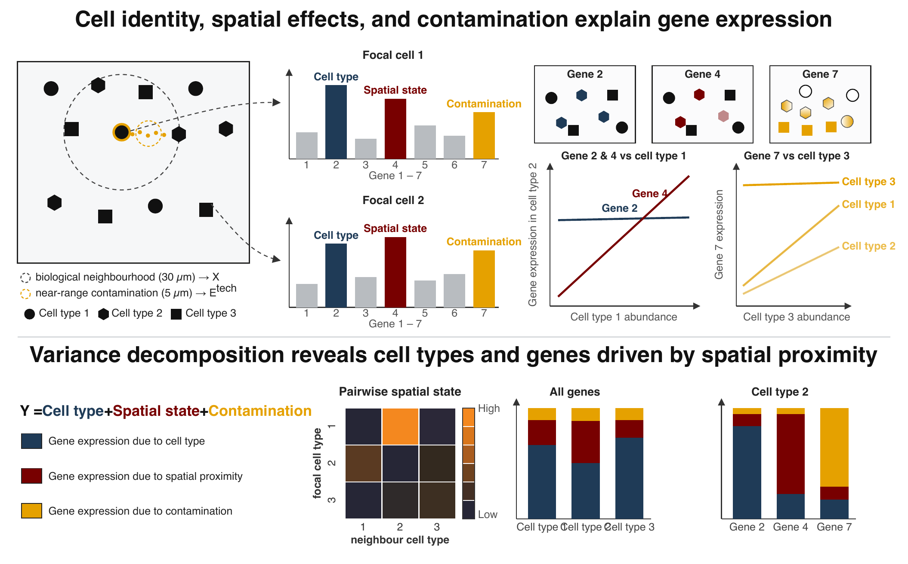

A hierarchical empirical Bayes framework for proximity-associated changes in expression — how a cell’s gene expression shifts near specific neighbouring cell types — in imaging-based spatial transcriptomics (Xenium, CosMx).

Overview
PACE quantifies how proximity to specific neighbouring cell types reshapes a cell’s gene expression. It fits hierarchical negative binomial mixed models with partial pooling across cell types, corrects for transcript contamination between adjacent cells with a per-cell ambient term, and decomposes expression variance into cell-type identity, spatial cell state, contamination, and residual components. A per-gene driver score ranks the genes that mediate each focal–neighbour relationship.
Input and output follow SpatialExperiment conventions: a single call to paceFit() returns a PACEFit object, read out with neighbourSlopes(), varianceDecomposition(), and topDrivers(). See the package vignette for a worked breast cancer example.
Installation
PACE requires a C++ compiler (via Rcpp/RcppEigen) for the contamination-correcting solver.
If you would like the most up-to-date features, install the development version from GitHub.
# install.packages("BiocManager")
BiocManager::install("remotes")
remotes::install_github("ecool50/PACE")
library(PACE)Submitting an issue or feature request
PACE is still under active development. We would greatly appreciate any and all feedback related to the package.
- R package related issues should be raised here.
- For general questions and feedback, please contact us directly via ewil3501@uni.sydney.edu.au.
Author
- Elijah Willie
- Shreya Rajesh Rao
- John Ormerod
- Ellis Patrick - @TheEllisPatrick